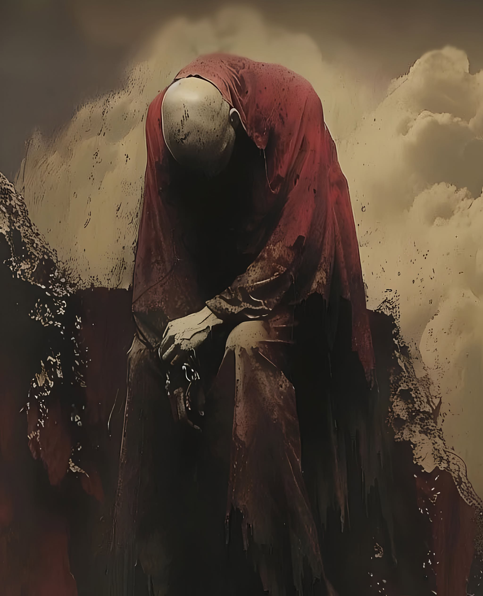

The Artist
Johb Ashar
Composer of impossible landscapes. Builder of symbolic worlds. Bearer of witness to the invisible.

The Threshold
There are artists who create songs. There are artists who create images. Johb Ashar creates thresholds.
His work exists in the liminal architecture between remembrance and revelation, where sound becomes scripture and light becomes language. Every composition is conceived as an alchemical rite, every visual work a fragment of an unwritten cosmology. Together they form immersive worlds that invite not observation, but initiation.
Johb Ashar ventures into the spaces where certainty dissolves. His creations wander through forgotten temples of consciousness, abandoned constellations, and the silent corridors that exist between the final breath and the first awakening. Here, time folds inward. Death is neither punishment nor conclusion, but a veil of transformation. Life is not possession, but passage. The soul is not imagined, but remembered.
Sound as Scripture
His music emerges like signals carried across impossible distances, layered with haunting atmospheres, ritualistic rhythms, and melodies that feel excavated rather than composed. They speak in frequencies that seem older than language itself, awakening something ancient beneath the noise of modern existence. Each note becomes a lantern suspended within the unknown, illuminating the hidden landscapes that lie beneath fear, grief, ecstasy, and hope.
The accompanying visual works extend this mythology into living symbols. Sacred geometry fractures into celestial ruins. Flesh dissolves into starlight. Cathedrals bloom from ash while forgotten deities sleep beneath oceans of silence. Every frame is constructed as both prophecy and mirror, inviting the viewer to recognize themselves within the eternal cycle of creation, dissolution, and return.
Yet these worlds are not an escape from reality. They are a deeper descent into it.
The Sacred Flame
Beneath every spectral landscape and cosmic metaphor lies an unwavering reverence for human dignity. Johb Ashar's work bears witness to those whose voices have been buried beneath systems of power, violence, exploitation, and indifference. The oppressed, the displaced, the forgotten, the wounded, and the unseen are not peripheral figures within his mythology. They are its quiet constellations, illuminating truths history too often obscures. His art does not claim to speak for them, nor does it seek to romanticise suffering. Instead, it honours the resilience of the human spirit and reveals the sacred flame that endures even where hope has been eclipsed, affirming that every soul carries a light no empire, ideology, institution, or force of oppression can extinguish.
In this vision, bearing witness becomes a sacred act. Compassion becomes remembrance. Truth becomes an instrument capable of dissolving illusion. The invisible structures that divide humanity are unveiled not through slogans, but through symbols, emotion, and profound immersion. Johb Ashar invites audiences to remember that justice is not merely political. It is spiritual. To deny another's humanity is to diminish one's own soul. To bear witness to suffering with honesty, humility, and love is to stand in quiet reverence before what is most sacred within us all.
Mortality, Memory, Exile, Resurrection
Recurring throughout his practice are themes of mortality, transcendence, memory, exile, sacrifice, resurrection, silence, and cosmic interconnectedness. His works ask questions that refuse simple answers. What remains when identity is stripped away? Where does consciousness travel when language falls silent? Can beauty become an act of resistance? Can grief become a doorway? Can art restore what history attempts to erase?
Johb Ashar offers no doctrine. He constructs no religion. Instead, he opens portals through which each individual may encounter their own mysteries. His work belongs equally to darkness and illumination, to collapse and renewal, to mourning and celebration. It exists where paradox becomes harmony, where opposites cease their struggle and reveal themselves as reflections of a single, boundless whole.
Every release, every moving image forms another chamber within an ever-expanding mythos, inviting those who enter to become participants rather than spectators. Nothing is presented as absolute. Everything is experienced as unfolding. Meaning is discovered not through explanation, but through surrender.
An Enigma Whose Medium Is Transformation
Johb Ashar is an enigma whose medium is transformation.
A composer of impossible landscapes. A builder of symbolic worlds. A bearer of witness to the invisible. Through extraordinary music, visionary imagery, and immersive mythmaking, he dissolves the boundaries between life and death, memory and prophecy, the earthly and the eternal. His work does not seek to explain the mystery. It invites us to enter it. To remember that beneath every wound, every silence, every ending, the soul remains luminous.
This is not entertainment.
It is remembrance.
This is not escape.
It is return.
Welcome to the world of Johb Ashar.
Enter the soundscapes, visual works, and symbolic worlds that dissolve the boundary between life and death.